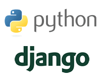

for Fun and Profit
Assumptions
- Familar w/ Python
- Know a little bit about Django
- Know what REST is


Please as questions if anything is unfamiliar or unclear.
What is Django REST Framework?
"Django REST framework is a powerful and flexible toolkit that makes it easy to build Web APIs."
What does this really mean?
Let's build an API
Who likes beer?
Beer API
Create a beer catalog
Order some beer
API Design
GET /beers/ # Get a list of beers
POST /beers/ # Create a new beer entry
GET /beers/5 # Get a single beer entry
PUT /beers/5 # Update a beer entry
PATCH /beers/5 # Partially update a beer entry
DELETE /beers/5 # Delete a beer entry
POST /orders/ # Create a new beer order
Beer Model
from django.db import models
class Beer(models.Model):
STYLES = (
('IPA', 'India Pale Ale (IPA)'),
('WHEAT', 'Wheat'),
('BLONDE', 'Blonde Ale'),
...
)
name = models.CharField(max_length=100)
abv = models.DecimalField(max_digits=4, decimal_places=2)
style = models.CharField(max_length=50, choices=STYLES)
def __str__(self):
return self.name
.schema beer_beer
CREATE TABLE "beer_beer" (
"id" integer NOT NULL PRIMARY KEY AUTOINCREMENT,
"name" varchar(100) NOT NULL,
"abv" decimal NOT NULL,
"style" varchar(50) NOT NULL
);
Beer Serializer
from rest_framework import serializers
class BeerSerializer(serializers.HyperlinkedModelSerializer):
class Meta:
model = Beer
Creates a serializer field for each of the model's fields.
from rest_framework import serializers
class BeerSerializer(serializers.Serializer):
url = HyperlinkedIdentityField(view_name='beer-detail')
name = CharField(max_length=100)
abv = DecimalField(decimal_places=2, max_digits=4)
style = ChoiceField(choices=Beer.STYLES)
Serializer Validation
s = BeerSerializer(data={
'name': 'Pabst Blue Ribbon',
'style': 'AMAZING'
})
s.is_valid()
False
s.errors
{
'style': ['"AMAZING" is not a valid choice.'],
'abv': ['This field is required.']
}
Also handles converting model instances into serializable data (lists, dicts, etc.)
View Sets
from rest_framework import viewsets
class BeerViewSet(viewsets.ModelViewSet):
queryset = Beer.objects.all()
serializer_class = BeerSerializer
def list(self, request):
def create(self, request):
def retrieve(self, request, pk=None):
def update(self, request, pk=None):
def partial_update(self, request, pk=None):
def destroy(self, request, pk=None):
URL Routing
from rest_framework.routers import DefaultRouter
router = DefaultRouter()
router.register('beers', BeerViewSet)
urlpatterns = router.urls
GET /beers/ # list()
POST /beers/ # create()
GET /beers/5 # retrieve()
PUT /beers/5 # update()
PATCH /beers/5 # partial_updat()
DELETE /beers/5 # destroy()
Putting it all together
Demo Time
Ordering a Beer
class OrderSerializer(serializers.Serializer):
beer = serializers.HyperlinkedRelatedField(
view_name='beer-detail',
queryset=Beer.objects.all()
)
quantity = serializers.IntegerField(
min_value=1,
max_value=12
)
email = serializers.EmailField()
class OrderView(generics.CreateAPIView):
serializer_class = OrderSerializer
def perform_create(self, serializer):
send_mail(
subject='Beer Delivery',
from_email='api@beerdelivery.com',
recipient_list=[serializer.validated_data['email']],
message='Enjoy your beer!'
)
# TODO: DEPLOY THE BEER DRONES FOR DELIVERY
router = DefaultRouter()
router.register('beers', BeerViewSet)
urlpatterns = [
url(r'^', include(router.urls)),
url(r'^orders/', OrderView.as_view())
]